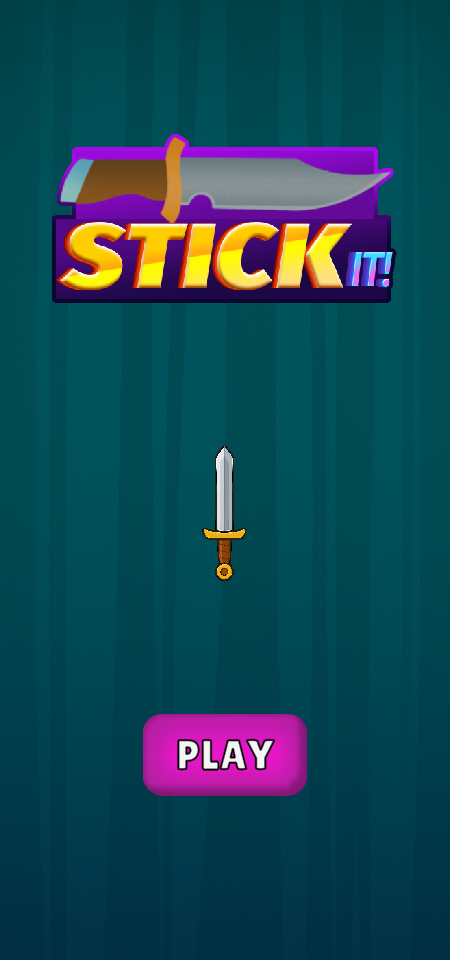
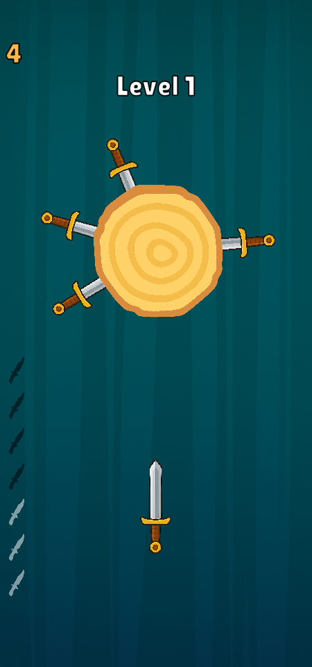
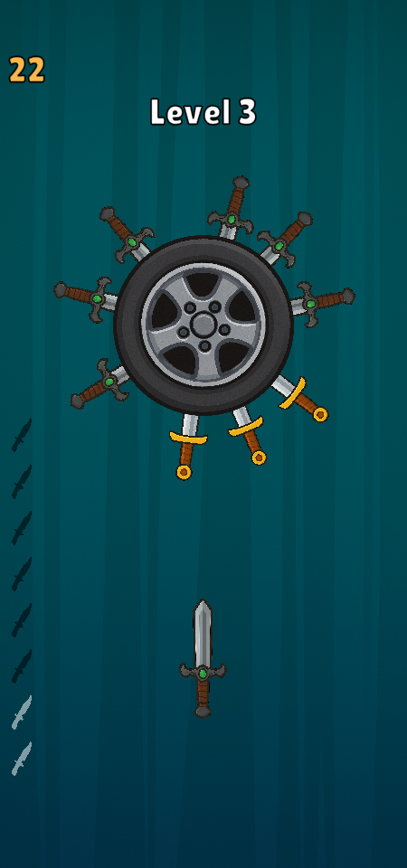
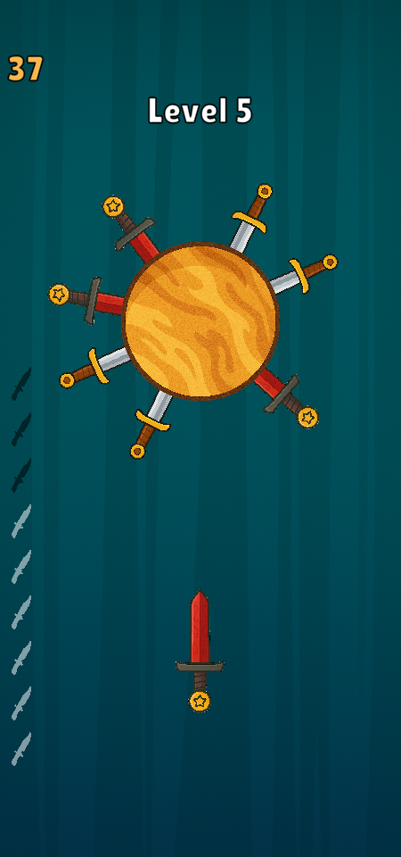
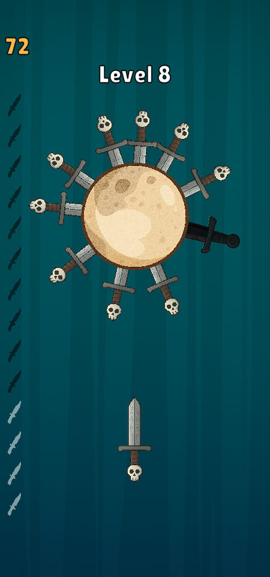

Ana Sayfaya Dön
Stack
Oyunu Oyna
Ekran Görüntüleri







Proje Genel Bakış
Stack, popüler mobil oyun Stack'ın klon versiyonudur. Unity ile geliştirilen bu proje, oyuncuların blokları üst üste dizerek yüksek kuleler inşa etmelerini sağlar. Oyun, basit ama bağımlılık yapıcı mekaniklerle oyuncuları uzun süre oyunda tutmayı hedefler.
Rolüm ve Sorumluluklar
Oyun Mekanikleri & Fizik
Performans Optimizasyonu
UI/UX & Görsel Sistem
Skor & Motivasyon Sistemi
Teknik Yetenekler
Unity & C# Geliştirme
Modüler Mimari & Design Patterns
Mobil & Cross-Platform
Bellek & Performans Yönetimi
Problem Çözme & Zorluklar
Hassas Oyun Mekanikleri
FPS Düşüşleri & Performans
Kamera Takibi & Animasyon
Renk Senkronizasyonu
Geliştirme Süreci
Versiyon Kontrolü
Kod Kalitesi
Tek Kişilik Geliştirme
Proje Teslimi
Sonuçlar
Proje başarıyla tamamlandı ve test kullanıcılarından olumlu geri bildirimler aldım. Oyun mekanikleri akıcı çalışıyor ve mobil platformlarda sorunsuz performans gösteriyor. Proje, Unity ile mobil oyun geliştirme konusunda değerli deneyim kazandırdı.